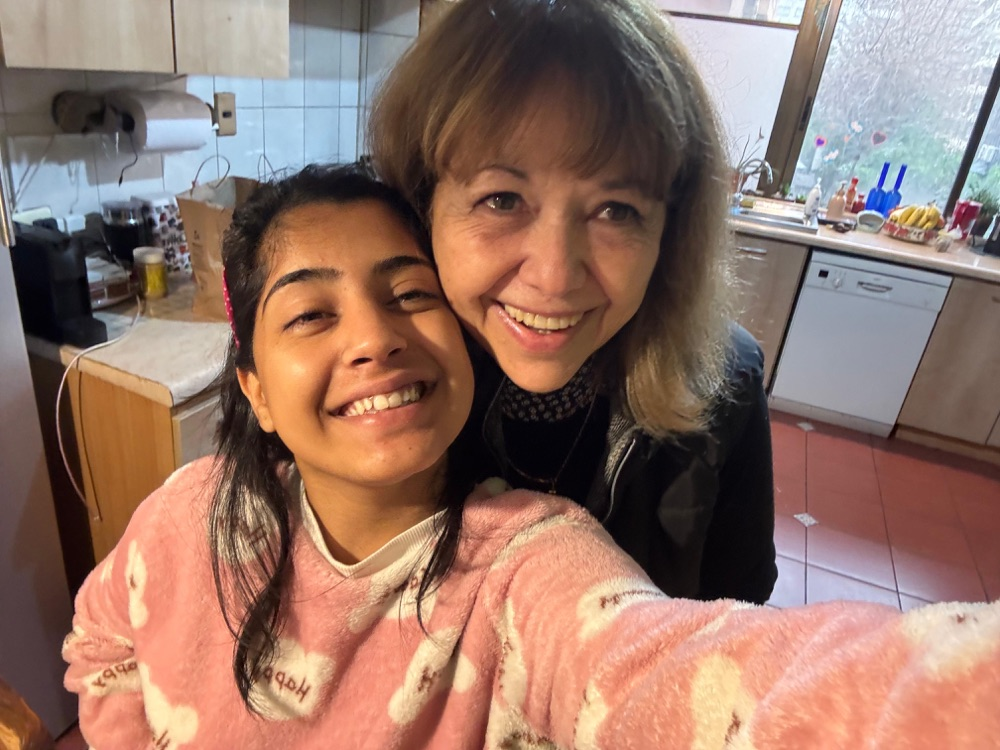

2025
My Chile chapter actually started in Cape Town. If you’ve read that chapter, you know how much the people there meant to me. A lot of my friends were from South America, and hearing them speak Spanish made me curious. There were entire conversations happening around me that I couldn’t be part of. I wanted to understand what they were saying, what was funny, what made them suddenly get so passionate about something. So I started learning on Duolingo. Then I moved to the U.S., and there were even more people who spoke Spanish. Learning it started to feel like a way of making my world bigger. I’d already experienced that with English, how a language that once made me uncomfortable eventually helped me make friends, study abroad, and build a life somewhere new. I wanted to see who Spanish might introduce me to. When I found out about Lehigh’s Iacocca International Internship Program, I thought, okay, Chile is the country for me. I’d spend the summer doing an internship and immerse myself in Spanish. Surely living somewhere for two months would get me further than talking to a green owl every day.
I spent the summer in Santiago, working on web development and product management at Watgen, a climate-tech startup in the Start-Up Chile program. Outside work, I lived with my host mom, Mary. She’s 72 now. She barely spoke English, and I arrived with a 90-day Duolingo streak and considerably more enthusiasm than vocabulary. We used Google Translate a lot. Think about what it takes to get to know someone that way. You want to say something, but first you have to figure out how. The other person has to wait. Then it’s your turn to wait while they answer. A conversation you could have easily with someone back home suddenly takes effort from both of you. But every night, Mary and I sat down for dinner and did it again. That’s the part I keep coming back to when I think about us. How willing we both were to keep trying. It would have been easy to keep our conversations practical, to communicate what we needed and leave it there. We had enough words for that. But we wanted to know each other beyond what was easy to say.
Before Chile, I placed so much importance on being able to explain myself. I like talking. I like asking questions and hearing people’s stories. Words are how I let people into my life. So I think I assumed that without a shared language, there would always be a limit to how close I could feel to someone. With Mary, I had to get comfortable with being understood a little at a time. She didn’t have access to the version of me who could easily tell a whole story in English, make a joke, or explain exactly what she meant. I couldn’t give her every detail or every part of my personality right away. And somehow, I still felt loved. That was new to me: realizing I could struggle to express myself and still have a place in someone’s life. My Spanish improved, but by then, learning it had become personal. I wanted more words because I wanted more of our conversations. I wanted to understand her without a phone between us. There’s something really meaningful to me about that shift. A language I’d started learning out of curiosity became a way of getting closer to one particular person.
Somewhere in those ordinary evenings, Mary became my second mom. I know that’s a big thing to call someone you’ve known for two months. I’m still a little amazed by it myself. But I don’t know what else to call someone whose home began to feel like my own, someone I went abroad to meet as a host and came to love as family. It made me question how I thought about belonging, too. I grew up in Punjab, where so much of my life was connected to people who had known me since I was little. There’s comfort in that shared history. Mary and I had none of it. We were different ages, from different countries, with entire lives the other knew nothing about. We started with two months and a willingness to make room for each other. Knowing there was an end date makes those dinners feel even more precious to me now. When you’re living abroad, you know from the beginning that you’ll leave. But you can’t really plan how attached you’ll get before that happens. A temporary arrangement can become a relationship you want to keep for the rest of your life. I made LLORONA, a film about Mary and me, because I wanted to hold on to that part of my time in Chile. If you’d like to meet her, you can watch it here. I love exploring new places, but when I think about what makes living abroad meaningful to me, it’s the people. It’s realizing that somewhere you’ve never been, there could be a person you haven’t met yet who will eventually feel like home. And for me, that’s Mary
